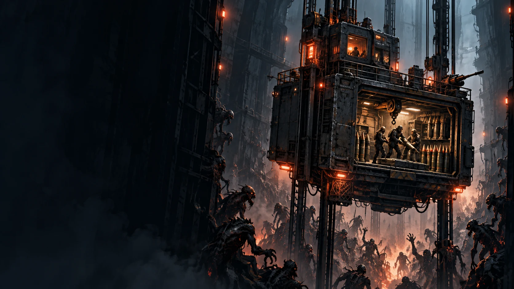

INDEPENDENT GAMES, PERSONAL WORLDS
小小的工作室，
大大的冒险。
你好，我是 XUE，一名独立游戏创作者。
把脑海里的奇怪念头，
做成值得你停留的世界。

主打作品 / FEATUREDPROJECT — 01
向上，是唯一的出路。
亡命电梯 E–07
一座不断上升的移动基地，一群无路可退的人。
瞄准、装填、守住入口，穿过脚下涌来的怪潮。
开发中 · PC
射击策略 / 移动基地 / 末路求生概念美术 · 非实机画面
THE COLLECTION
正在成形的世界 / 03
每个世界都有自己的节奏。示例作品用于展示，名称与内容可替换。
FROM THE WORKBENCH
游戏之外，
开发之中。
记录想法，也记录取舍。
一个游戏慢慢长大的过程。
开发者工具箱 / LEARNING RESOURCES
游戏开发学习资源
整理开发中用到的文档、工具和练习，按需查阅。
ONE DEVELOPER, MANY POSSIBILITIES
好玩的世界，
从一个“如果”开始。
如果，一部电梯就是最后的避难所？
如果，一间小屋能让忙碌的一天安静下来？
我想把这些问题做成游戏。这里是我的作品集，也是开放的创作记录。欢迎你来看看，偶尔回来，见证下一个想法变成现实。
Xue独立游戏创作者